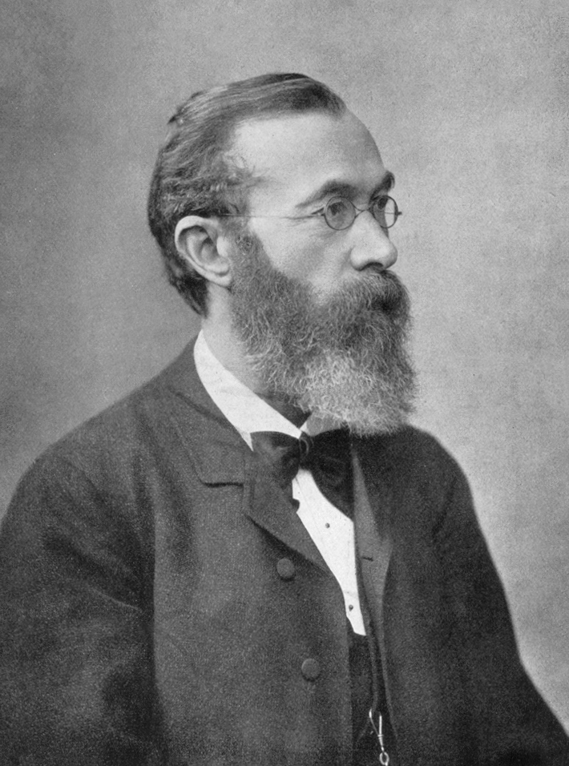
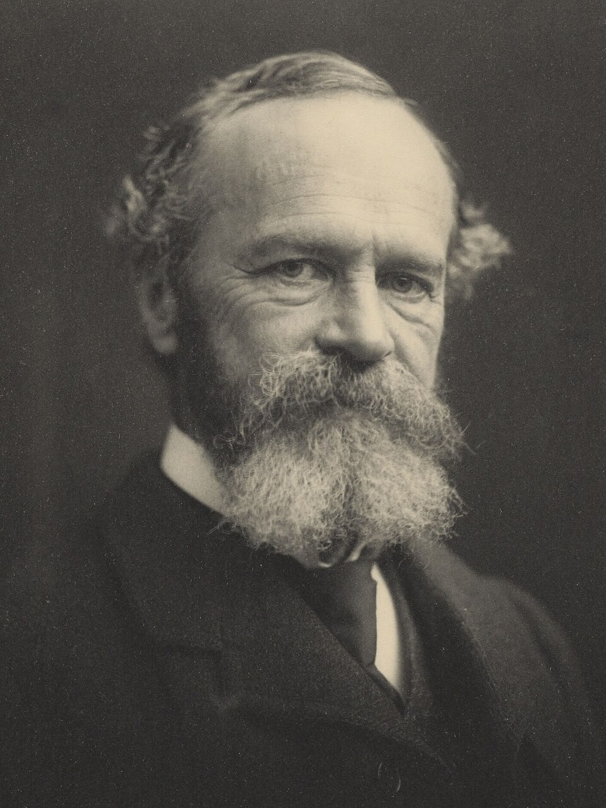

Кто такой Вундт
Немецкий физиолог и психолог; стремился изучать психические процессы измеримо и воспроизводимо.
Учебная презентация · 7–10 минут
Вильгельм Вундт и Уильям Джеймс


Основа темы
Психология сознания изучала внутренний опыт человека — то, что можно заметить «изнутри».
Немецкий физиолог и психолог; стремился изучать психические процессы измеримо и воспроизводимо.
В Лейпциге открыта первая лаборатория экспериментальной психологии — точка отсчёта научной дисциплины.
Психология вышла из чисто философских рассуждений: появились приборы, протоколы, обучение методу.
Участнику предъявляют звуковой сигнал и измеряют время реакции; затем он кратко описывает ощущения и момент решения — опыт фиксируется вместе с измерением.
Важно: подход Вундта ≠ структурализм Титченера (последний сильнее сводил психику к «кирпичикам» ощущений).
Сознание активно отбирает сигналы, а не зеркалит всё подряд.
Освобождают внимание: рутинные действия идут «на автомате».
В шумной аудитории студент выделяет голос преподавателя: поток впечатлений непрерывен, но внимание избирательно «выхватывает» нужный голос.
| Критерий | Вундт | Джеймс |
|---|---|---|
| Предмет | Непосредственный опыт; элементы и их организация | Сознание как процесс приспособления и действия |
| Понимание сознания | Организуемый опыт; роль апперцепции | Поток: непрерывен, личен, изменчив, избирателен |
| Методы | Эксперимент + контролируемое самонаблюдение | Анализ опыта, наблюдения, широкие описания; интерес к функции |
| Ключевые понятия | Ощущения, чувства, апперцепция | Поток сознания, внимание, привычки |
| Вклад | Институционализация экспериментальной психологии | Основа функционального взгляда на психику |
Общее: оба делают сознание центральным предметом. Различие: Вундт — «как устроен опыт», Джеймс — «зачем он нужен».
Ограничения метода ≠ отрицание научного вклада Вундта и Джеймса.
К заданию по научным школам
| Название | Автор(ы) | Основные положения | Значение, оценка |
|---|---|---|---|
| Экспериментальная психология сознания | В. Вундт | Предмет — непосредственный опыт; ощущения и чувства; апперцепция как активная организация; экспериментальное самонаблюдение в лаборатории | + лаборатория 1879, научный статус психологии − субъективность самоотчётов; слабый охват неосознаваемого |
| Функциональный подход к сознанию | У. Джеймс | Сознание — поток; непрерывно, лично, изменчиво, избирательно; внимание и привычки помогают действовать и адаптироваться | + вопрос о функции сознания; влияние на функционализм − меньше строгой экспериментальной стандартизации, чем у лабораторной линии |
Страницы не указаны: использованы общие положения указанных трудов, без выдуманных цитат и выходных данных.